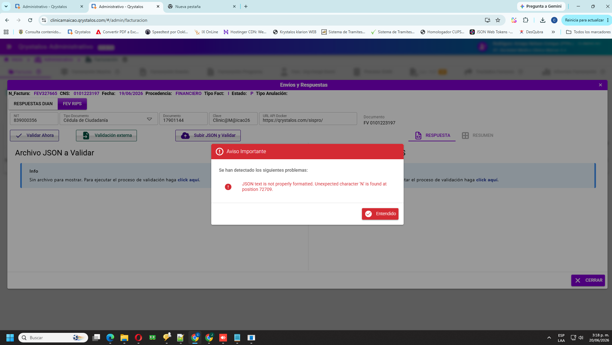

Hoy, cuando el usuario valida en el portal del ministerio y trae los archivos .txt/.json a «Validación externa», Qrystalos no logra interpretar bien ese contenido y el servidor rechaza el guardado; por eso no queda el CUV ni la respuesta en la factura. Se propone enseñar al sistema a «limpiar y entender» esos archivos del ministerio…
Generado 2026-10-02 · mockup alineado a FTRComponent (Envíos y Respuestas) + ValidacionesFEVRipsComponent (Validación externa)